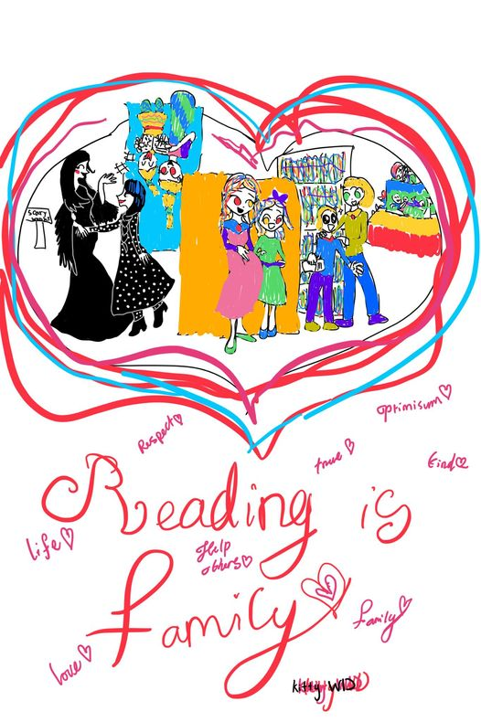

Thời điểm ở New Jersey tụi mình có được làm quen với một gia đình hàng xóm. Cô ấy là người nhập cư đến Mỹ, cô và chồng đang làm cho một ngân hàng và bệnh viện. Cách cô ấy dạy con tiếp xúc với chữ rất tuyệt vời. Thời điểm đó con mình năm tuổi con của cô ấy bốn tuổi, mình thấy mỗi lúc đi đâu nhìn thấy chữ bảng hiệu cô ấy đều chỉ cho con và hướng dẫn con đọc thành tiếng Chữ ấy lên. Bạn nhỏ Marlin biết đọc khá sớm.
Hôm qua mình gặp một cô bạn bác sĩ thẩm mỹ, cô hỏi mình làm thế nào để giúp con em mê đọc sách hả chị, Harry con em nó mê đóng vai lắm, nó là Batman, ba là…mẹ là…, nó thích mấy cuốn sách đánh đấm lắm…
Theo mình hiểu cả hai gia đình trên đều thực hiện rất tốt việc hướng dẫn con đọc. Marlin và Harry đều có ba mẹ tuyệt với vì đã luôn bên cạnh và khuyến khích con học đọc bằng những cách khác nhau.
Ở mỗi lứa tuổi tùy theo tính cách sở thích đứa trẻ có những mong muốn khác nhau và cha mẹ sẽ cần hướng dẫn con để bé thích đọc sách.
Trẻ sơ sinh (mới sinh - 12 tháng tuổi)
Ngay từ khi mới sinh, trẻ có thể đọc sách theo cách của mình.
Hoạt động đọc sách lúc này chủ yếu là trò chuyện với bé. Bé rất thích nghe giọng của ba mẹ. Bé sẽ biết những gì bé nói là có ý nghĩa và quan trọng với bạn khi bạn đáp lại những âm thanh của bé bằng giọng của mình. Khi bạn đọc cho con, bé sẽ có thể liên hệ sách với những gì mà mình yêu quý đó là sự gần gũi và giọng nói của bạn.
Loại sách:
Loại sách cần chắc bền có màu sắc tươi tắn, hình vẽ đơn giản. Ba mẹ có thể chọn các loại sách vải, hoặc sách bìa cứng, sách có kích thước lớn, sách lật mở, đục lỗ hoặc là có những hình ảnh và âm thanh để có thể tương tác được.
Cách đọc:
Bạn có thể đọc sách cho con nhiều lần, mỗi lần ngắn thôi, mỗi ngày, giờ đọc sách có thể là giờ đi ngủ, khi bạn đang chăm sóccon hoặc giờ đi dạo.
Bạn có thể chỉ vào những thứ trên tranh trong sách và gọi tên. Bé có thể liên hệ âm thanh với nghĩa của từ khi bạn sử dụng từ ngữ đó đồng thời với việc chỉ vào vật đó, kể cả bộ phận trên người của bé như là mắt mũi miệng hoặc các cái vật dụng xung quanh.
Bạn có thể đưa cho bé những cuốn sách cứng cáp để bé quan sát, cầm nắm, sờ chạm. Cho bé nhìn qua các lỗ hoặc là các miếng bìa trong sách và khám phá những điều bất ngờ.
Bạn có thể Kiểm tra quá trình đọc của con:
Mình đã dành một nơi thoải mái để nói chuyện và đọc truyện cho con không, con có vui vẻ khi ở đó không, mình có chỉ cho con các hình vẽ trong sách không, mình có thay đổi tông giọng khi đọc để thể hiện cảm xúc và sự hứng thú hay không, mình có chú ý đến phản ứng của con không, con đặc biệt thích điều gì, con có mệt và muốn dừng lại hay không.
Một số các mốc phát triển giác quan trong cơ thể của trẻ và có thể liên quan đến học đọc mà ba mẹ cần quan tâm:
- Trẻ một tháng tuổi có thể tập trung ở khoảng cách từ 20 đến 25cm; trẻ có thể thích mẫu hình trắng đen hoặc tương phản mạnh; trẻ thích gương mặt người hơn các mẫu khác. Sách lúc này cần có màu sắc tương phản cao, chất liệu mềm và có màu tươi, tạo âm thanh dễ thương.
- Trẻ từ một đến ba tháng tuổi đã có thể nhìn gương mặt một cách tập trung, theo dõi các đồ vật đang di chuyển, nhận biết đồ vật và gương mặt quen thuộc ở một khoảng cách và bắt đầu sử dụng phối hợp giữa tay và mắt. Trẻ có thể cười khi nghe giọng nói của bạn trẻ bắt đầu bắt chước được vậy âm thanh và quay đầu qua hướng âm thanh. Sách lúc này cần có màu tương phản cao, màu sáng đa dạng, ba mẹ có thể thường xuyên nói, hát, kể chuyện cho trẻ nghe.
- Trẻ từ bốn đến bảy tháng tuổi đã có thể phát triển thị giác đầy đủ màu sắc, có khả năng nhìn xa được hoàn thiện, về ngôn ngữ trẻ có thể đáp lại với tên mình, bắt đầu phản ứng với “không”, biết phân biệt cảm xúc qua lời nói, đáp ứng với âm thanh bằng cách tạo nên âm thanh, biết dùng giọng nói để diễn đạt sự hài lòng hoặc không hài lòng, bập bẹ những chuỗi phụ âm. Sách lúc này nên là những tạp chí có những bức tranh sáng, có thể sử dụng chất liệu bằng vải, sách có nhạc, sách có bìa cứng với nhiều mảnh ghép. Sách tương tác có thể sử dụng được trong độ tuổi này.
- Trẻ từ tám đến 12 tháng tuổi đã có thể cố gắng bắt chước vẽ nguệch ngoạc, trẻ đã gia tăng sự chú ý với lời nói, trẻ biết sử dụng những cử chỉ đơn giản như lắc đầu để nói không, trẻ đã có thể sử dụng từ “ba ba”, “ma ma” hoặc những từ cảm tháng như ô, a,… và cố gắng bắt chước từ ngữ. Về mặt nhận thức trẻ đã nhìn đúng hình ảnh và gọi được tên và bắt đầu sử dụng chính xác những đồ vật trẻ cũng biết quay số điện thoại và dễ dàng tìm được những vật cất giấu. Vì thế sách trong trường hợp này là có những kích thước, hình dạng, màu sắc khác nhau, có thể có bìa cứng, tranh lớn.
Trẻ tập đi (từ một đến ba tuổi)
Loại sách:
Cuốn sách dành cho trẻ phù hợp là sách có nhiều tranh vẽ, câu chuyện ngắn gọn đơn giản. Có thể chọn sách khổ lớn với một nhân vật chính xuyên suốt, nội dung dễ hiểu, kết thúc rõ ràng.
Cách đọc:
Có thể đọc cho trẻ một cuốn sách thật nhiều lần, vì lặp đi lặp lại cũng là một phần trong quá trình tập học đọc. Cha mẹ có thể giải thích cho con về nội dung câu chuyện cùng lúc với đọc sách. Trẻ ở độ tuổi này có thể đã hứng thú tìm hiểu thế giới xung quanh, bắt đầu biết được nhiều từ ngữ, bập bẹ phát âm những câu thơ, lời bài hát.
Bạn có thể Kiểm tra quá trình đọc của con:
Con có thích cuốn sách mà ba mẹ đang đọc cho con hay không, ba mẹ có khuyến khích con giả vờ đọc và cùng đọc khi đến đoạn có từ hoặc cụm từ mà con nhớ hay không, khi đặt ra các câu hỏi mình có cho con đủ thời gian để suy nghĩ và trả lời không, mình có liên kết các khái niệm trong sách có những thứ còn quen thuộc không, mình có nhận ra nếu con tự biết liên kết hay không, mình để cho con mình thích các ý tưởng của con đến mức nào và khuyến khích con nói cho mình nhiều hơn không, mình có chỉ ra các chữ cái chẳng hạn chữ đầu tiên trong tên của con hay không.
Một số mốc phát triển:
Mốc ngôn ngữ ở trẻ hai tuổi là trẻ có thể nói nhiều từ đơn và có thể chỉ đồ vật hay tranh ảnh khi xướng tên, trẻ cũng nhận biết tên của những người trong gia đình những đồ vật hay là những thành phần cơ thể, trẻ có thể lặp lại những từ nghe được trong câu chuyện, trẻ bắt đầu phân loại đồ vật theo hình dạng và màu sắc, Trẻ hiểu các cái mối quan hệ về mặt vị trí như trên - trong - dưới, trẻ có thể dùng bốn năm từ có thể nói tên, tuổi, giới tính, trẻ có thể bắt chước người lớn và những bạn cùng chơi.
Trẻ từ ba đến bốn tuổi
Loại sách:
Các loại sách nên có nhiều tranh ảnh động vật, thực vật, con người, thế giới tự nhiên.
Cách đọc:
Có thể đề nghị trẻ bắt đầu tìm và gọi tên một số chữ cái.
Có thể chỉ các chữ cái trong các bảng hiệu, thông báo, poster, bao bì sách và tạp chí.
Khuyến khích con đánh vần và viết tên mình. Bạn ngồi cùng với con viết tên con ra giấy rồi đọc từng chữ cái trong khi viết.
Thử lập một thư viện cho trẻ, cho trẻ một chỗ cất sách riêng của mình.
Bạn có thể Kiểm tra quá trình đọc của con:
Mình có tìm những cách giúp con nhận biết âm thanh, chữ cái và khớp âm thanh với chữ hay không; Con có thuộc các giai điệu của bài hát trẻ con không, có chơi được những trò gieo vần không, có tiếp nhận được thông tin và chỉ dẫn từ cách trò chuyện hoặc là các Cuốn sách đã đọc hay không.
Có thể ba mẹ cần quan tâm đến một số mốc Kỹ năng, ngôn từ, Nhận thức, cảm xúc ở trẻ từ ba đến bốn tuổi để có thể xem con mình đạt được mức độ nào; từ đó tăng cường hoặc cải thiện khả năng đọc sách cho con để giúp con đạt được những mốc này. Ví dụ:
Về kỹ năng bàn tay và ngón tay: trẻ đã có thể chép hình tròn và vuông theo mẫu, vẽ hình người với hai cho đến bốn phần, chép vài chữ cái.
Về ngôn ngữ: Từ ba đến bốn tuổi, trẻ quan tâm đến những kinh nghiệm mới. Trẻ có thể hợp tác với các trẻ khác. Trẻ chơi mẹ hoặc bố tức là chơi trò chơi đóng vai. Trẻ tăng sáng tạo trong những trò chơi tưởng tượng. Trẻ biết cách mặc và cởi quần áo. Thỏa thuận giải pháp khi có xung đột và trẻ ở độ tuổi này tự lập hơn. Trẻ nói được những câu có từ năm đến 6 từ và nói khá rõ ràng với người lạ có thể hiểu. Trẻ cũng đã biết kể chuyện.
Về nhận thức: trẻ đã có thể nói đúng tên vài màu, bắt đầu có khái niệm về thời gian, nhớ một phần câu chuyện,hiểu khái niệm giống và khác tham gia trò chơi tưởng tượng tuân theo mệnh lệnh gồm ba phần.
Trẻ năm đến sáu tuổi
Loại sách:
Các loại sách nên có nhiều tranh ảnh động vật, thực vật, con người, thế giới tự nhiên, tương tự hoặc ở cấp độ cao hơn một chút so với sách cho độ tuổi từ ba đến bốn tuổi.
Cách đọc:
Trẻ có thể chơi và thích những trò chơi từ ngữ đơn giản gồm hai hoặc nhiều từ có những âm giống nhau, ví dụ kể tên những con vật bắt đầu bằng một chữ cái nào đó. Bé biết cách tạo ra các từ từ những thành phần chữ cái khác nhau ví dụ như nối nguyên âm và phụ âm (ô, bô, cô, tô…)
Bạn có thể Kiểm tra quá trình đọc của con:
Mình có tạo điều kiện để con kể lại những câu chuyện mà con thích không. Con có bắt đầu gọi tên và viết các chữ cái, con số mà bé thấy trong sách không, những chữ và số bé thấy trên các biển quảng cáo, bảng hiệu và nơi khác không.
Riêng đối với các trẻ lớn hơn từ sáu đến 12 tuổi thì có thể chia làm hai nhóm:
Trẻ dưới chín tuổi:
Bạn có thể chọn những cuốn sách miêu tả về cuộc sống thực tế gia đình bạn bè trường học và cuộc sống xung quanh. Mỗi khi trẻ càng lớn thì niềm ham thích đọc sách của trẻ sẽ càng tăng. Ở lứa tuổi từ sáu đến chín thì trẻ đã có thể học được từ mới, học được những khái niệm mới mỗi ngày và trẻ cũng có thể biết cách tự đọc sách. Một điều quan trọng là không nên chọn các loại rất cao siêu vì có thể làm cho trẻ chán nản và không thích đọc sách.
Hãy để trẻ tự chọn hoặc ba mẹ có thể chọn những sách có con chữ đơn giản tình tiết rõ ràng.
Trẻ từ chín đến 12 tuổi:
Trẻ có thể đọc những quyển sách về cuộc đời nhà khoa học các doanh nhân nghệ sĩ các cầu thủ thể thao anh hùng dân tộc … Trẻ cũng sẽ thích đọc những quyển sách có nội dung phức tạp có chiều sâu và đòi hỏi suy nghĩ. Ba mẹ có thể chọn cho trẻ những loại sách phiêu lưu mạo hiểm khoa học viễn tưởng. Các bé ở độ tuổi này có thể không còn thích những câu chuyện và nhân vật có tính cách đơn giản nữa. Sách có kết thúc dễ đoán cũng sẽ làm cho trẻ nhàm chán. Trẻ ở lứa tuổi từ chín đến 12 đã có những hiểu biết về xã hội, về con người về thế giới xung quanh. Một số bạn trẻ trong độ tuổi này đã có thể đọc những cuốn sách rất phức tạp. Bạn có thể để con tự lựa chọn theo năng lực sở thích của mình.
Tài liệu tham khảo:
1. Sách “Người Mỹ giúp con ham đọc sách” (NXB Phụ Nữ, Bộ giáo dục Hoa Kỳ, Thu Thảo dịch)
2. Tài liệu “Chăm sóc trẻ từ 0 - 5 tuổi, tài liệu dành ho ba mẹ” (Đơn vị tâm lý, Bệnh viện Nhi đồng 1)
3. Sách “Không ai hiểu con bằng mẹ” (NXB tổng hợp TPHCM, Chủ biên BS Phạm Ngọc Thanh)
Các khái niệm “fiction” và “non-fiction” books đã cần được quan tâm. (Những chủ đề tới, Nhi viết tiếp ha!)
P/S 1: Nhi muốn cảm ơn vì đã được hơn 100 bạn bè ủng hộ like và follow trang của mình trong 2 ngày qua. Điều này có tính khích lệ rất lớn với Nhi.
Nếu bạn thích cuốn “Người Mỹ giúp con ham đọc sách”, Nhi sẽ gửi tặng nha, mình gặp trực tiếp nếu bạn ở HCMC hoặc Hà Nội hen?
Bạn comment sớm thì Nhi gửi nghen!
P/S 2: Tranh con gái Nhi vẽ, người lớn dẫn con trẻ đi thư viện, có một cặp mẹ và bé người dơi nên treo ngược đó, bạn thấy thích không?
